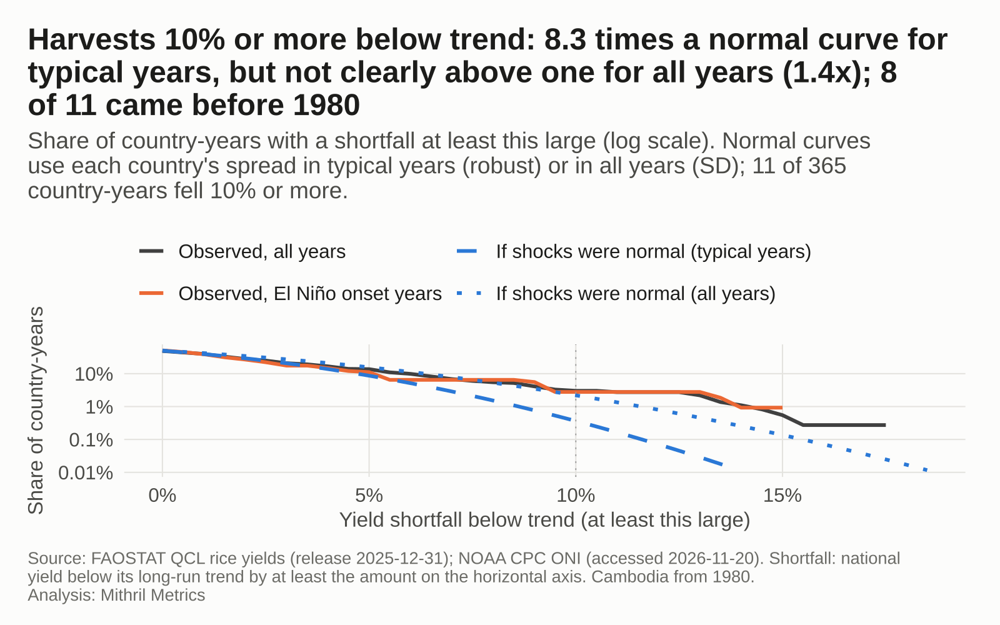

Short answer. Not in the year it begins. Across six Southeast Asian countries since 1961, El Niño onset years show no detectable rise in national rice shortfalls of 5% or more (11% of country-years vs 15% otherwise; the difference is within chance, not a sign that El Niño helps). In an exploratory check, rice production in Indonesia, the Philippines and Malaysia runs 4.1 to 4.9% below trend the year after an onset, depending on how countries are weighted; on the mainland there is no detectable effect (+1.1%, 95% interval -2.1% to 4.5%). Harvests 10% or more below trend are rare (11 of 365 country-years), and 8 of the 11 came before 1980.
Why this matters now
On 12 November 2026 NOAA’s Climate Prediction Center reported a strengthening El Niño, with a strong to very strong event likely through January-March 2027 (August-October Niño 3.4 anomaly: 2.46°C). FAO and WFP have launched a joint anticipatory action appeal. For rice, Southeast Asia’s staple, those planning reserves and imports need to know when harvest losses arrive and how deep they can go. Sources: NOAA CPC ENSO discussion and the FAO-WFP joint appeal.
What we did
We use FAOSTAT national rice yields, harvested area and production for Viet Nam, Indonesia, the Philippines, Thailand, Malaysia and Cambodia, 1961 to 2024 (365 country-years). For each country we fit a smooth long-run trend and treat the deviation from it as that year’s shock. A year counts as an El Niño year when NOAA’s Oceanic Niño Index averages at least 0.5°C from July to December (19 years; in back-to-back events such as 1976-77 and 1986-87 both years count). We then compare how often harvests fall at least 5% below trend in El Niño years and in other years, within each country. Confidence intervals come from resampling blocks of 3 consecutive years, because a single El Niño hits all six countries at once and shocks carry over from one year to the next.
What the data show
Deep shortfalls: rare, and mostly before 1980

Harvests 10% or more below trend occurred in 11 of 365 country-years, and 8 of them came before 1980. Whether that is more than a bell curve predicts depends on the benchmark. With each country’s spread in typical years (3.7% around trend), it is 8.3 times the predicted rate (95% interval 1.3 to 25.0). With the spread over all years, it is 1.4 times (interval 0.8 to 2.2), which does not rule out the bell curve. A tail-shape estimate is too imprecise to decide (0.08, interval -0.32 to 0.48). The typical-year ratio holds without major-conflict years (7.1 times) or 1997-98 (6.6 times). The clustering before 1980 suggests that volatility fell over time rather than a stable fat tail; we did not test this.
In the year El Niño begins, no detectable rise in shortfalls of 5% or more

Onset years had a shortfall of 5% or more in 11% of country-years, against 15% in other years: a within-country difference of -3.7 percentage points (95% interval -11.0 to 3.6). This rules out a large increase, not a modest one. Strong onsets are too few to tell apart (12%, 6 years). Onset years hold 19% of the worst tenth of harvests and 30% of all years. Harvested area changes by -1.3% in the onset year (interval -2.5% to -0.2%), not significant after the multiple-testing correction (adjusted p = 0.298).
Exploratory: a signal a year later, in maritime Southeast Asia

A July-December El Niño can hit a harvest that FAO records in the next calendar year, so we also looked at the year after onset, and at yield, area and production separately. These checks were added after the main result came back null. The planned version, the chance of a 5% yield shortfall the year after, shows nothing clear (5.5 percentage points, interval -2.7 to 14.8).
In Indonesia, the Philippines and Malaysia, rice production runs 4.9% below trend the year after an onset (95% interval -6.5% to -2.3%). Of the 14 effects tested, it is the only one that survives a multiple-testing correction. In a placebo test that shifts the El Niño years by each of the 59 offsets of more than two years, none gives a maritime effect as large (rank p = 0.017, the minimum possible). Comparing, for each shift, the largest of all 14 placebo effects (each scaled by its spread) with the largest real one, none is as large (rank p = 0.017). This accounts for the search across the 14 effects, but not for the choice of the maritime/mainland split, made after the main result. Dropping one event at a time leaves it between -5.3% and -4.5%; weighting countries by output, so that Indonesia counts most, gives -4.1% (interval -5.8% to -1.4%). With a more flexible production trend the estimate is -4.1% (interval -6.1% to -1.7%), with a LOESS trend -4.6% (-6.8% to -1.7%), and with five-year resampling blocks the interval is -6.2% to -2.1%. On the mainland there is no detectable effect (+1.1%, 95% interval -2.1% to 4.5%). The maritime effect is 6.0 percentage points lower than the mainland one (interval 2.7 to 9.0), so in this sample the gap between the regions is also clear (exploratory).
At 2024 trend output, the weighted estimate is about 3.2 million tonnes of paddy (interval 1.1 to 4.5), of which Indonesia 2.3, split in proportion to trend output. In milled rice, the unit of trade, Indonesia’s share is about 1.4 to 1.5 million tonnes. For scale, Indonesia imported 4.52 million tonnes of rice in 2024, the year after the 2023 onset (Statistics Indonesia, via CNBC Indonesia); imports also respond to reserve targets and prices, so this compares scale only. All figures are gaps against long-run trend, not falls from the previous year, and the 2024 trend is the least certain point of the series. In 2024, maritime production was 4.6% below trend (Indonesia -4.3%); that year is in the sample, so it illustrates the estimate rather than testing it.
The timing is consistent with agronomic studies for Indonesia, where El Niño delays the monsoon and the main wet-season planting, lowering the January-April harvest of the following year (Naylor et al. 2001; Naylor et al. 2007). We do not test this mechanism. Why the mainland shows no such pattern these data cannot tell; irrigation is one untested possibility.
What this means for policy
- If the aim is to time imports or reserve releases, the national data point, tentatively, to the harvests after the El Niño year in the maritime countries, not the onset year. National annual totals cannot show local losses and arrive too late to trigger early action; seasonal, subnational monitoring is the operational signal.
- If reserves or insurance are sized on variation in typical years, deep national shortfalls have come more often than that implies, but most of them before 1980, and a bell curve fitted to all years, bad ones included, is not rejected. Calibrating on all years matches the historical record; calibrating on recent decades matches current volatility. Larger buffers cost money in calm years; the choice is between that cost and the cost of a shortfall.
- If the 2026-27 event behaves like past ones, the 2027 harvests in Indonesia, the Philippines and Malaysia are where a national signal would show. The estimate averages 19 past events and cannot say how this stronger-than-most event will play out; FAOSTAT figures for 2027 appear in late 2028. After the 6 strong onsets since 1961, maritime production the year after averaged -7.7% against trend (interval -11.4% to -3.7%), but with so few events we cannot say strong events differ from moderate ones. Neither figure is a forecast for 2027.
Caveats
- National annual totals say nothing about local losses, where food insecurity concentrates. Prices and trade are outside our scope: in 2023, for example, India’s ban on non-basmati white rice exports in July pushed world rice prices to a 15-year high (CGIAR). Beyond the Indonesian scale check above, we have not compared the production gaps with import or reserve volumes. The six countries are the region’s main producers. Of them, only the Philippines is among the appeal’s 22 priority countries (Arab News/AFP); Timor-Leste, also on that list, and Myanmar and Lao PDR are not covered. The results speak to national import and reserve timing, not to anticipatory action triggers, which rest on seasonal, subnational forecasts.
- Timing is approximate. FAO records harvests by calendar year while cropping seasons straddle years, so part of the year-after gap may be harvest moved between calendar years rather than lost; we have not checked for a rebound the year after. The planned test looked at the onset year, and its comparison group includes the years after each onset, which pulls it toward zero.
- The maritime result comes from checks added after the pre-specified test came back null. The region split and the one-year lag were not specified in advance, and the yield-only effect does not survive a correction for multiple testing (adjusted p = 0.068). The placebo tests and the alternative trends make chance and detrending less likely explanations, but it remains a pattern to test on future data. Tonnes are paddy (unmilled) rice, roughly 1.5 to 1.7 times the milled weight.
- The intervals re-estimate each country’s typical variation in every draw but treat its long-run trend as known, so they are somewhat too narrow. The 2018 break in Indonesia’s series is estimated over years that include two El Niño episodes, which if anything understates the Indonesian effect. The tonnes scale an average past event to an end-of-sample trend that is itself uncertain; they indicate magnitude, not a forecast for 2027.
Data & code
- FAOSTAT Production: Crops and livestock products (QCL) (QCL; item Rice (27); elements Yield (5412), Area harvested (5312), Production (5510)), version 2025-12-31 (bulk catalogue DateUpdate), data 1961-2024, accessed 2026-11-20. Link
- NOAA CPC Oceanic Niño Index (ONI, ERSSTv5) (oni.ascii.txt (3-month running mean SST anomaly, Niño 3.4)), version monthly update; latest season at access is recorded in key_numbers.csv, accessed 2026-11-20. Link
- UCDP/PRIO Armed Conflict Dataset (ucdp-prio-acd-261 (country-years with intensity_level 2, via gwno_loc)), version 26.1 (1946-2025), accessed 2026-11-20. Link
Code to reproduce every number and figure: GitHub. Technical note with more detail (PDF, 2-3 pages): brief.pdf.
Use of AI tools. We use Claude, an AI assistant by Anthropic, as a working tool: to help with coding, data retrieval scripts and first drafts of text. Questions, methods, robustness checks and conclusions are our own, every number is reproducible from the published code, and we review all text before it goes online.

Written by Pietro Sala. Views are the authors’ own. Part of Mithril Metrics: reproducible analyses of current agri-food, water and climate policy questions.